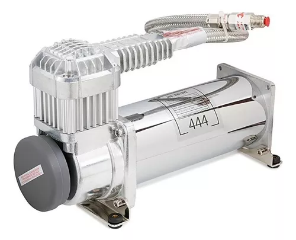

¿Que es la suspension Neumatica?
La suspensión neumática es un tipo de suspensión más avanzada que utiliza aire comprimido para absorber las irregularidades de la carretera. Como Ventaja tiene un mayor confort: proporciona una conducción más suave y cómoda que la suspensión mecánica. Mejor protección a la carga: ayuda a proteger la carga de los golpes y las vibraciones
Principales componentes
Bolsa de aire

La Bolsa de Aire es una pieza fundamental de la suspensión neumática, la cual funciona como un contenedor de Aire comprimido que con la presión adecuada y en conjuntos con los demás componentes permite que la suspensión suba o baje de acuerdo a la carga que trae el vehículo, el tipo de camino, y las condiciones de manejo
Tanque reservorio

es el encargado de almacenar el aire para el correcto funcionamiento de la suspension
Bloque de valvulas

El bloque de válvulas es un componente pequeño pero importante del sistema de suspensión neumática, se encarga de la distribución del aire presurizado a las bolsas de aire del vehiculo
Compresor
Es una de las partes mas importantes de la suspension neumatica ya que esta encargado de comprimir el aire que sera almacenado en el tanque reservorio
Central de valvulas

Desde la central se controlara de forma automatica o manual la apertura y cierre de las valvulas consiguiendo asi la altura y confort deseada en la suspension